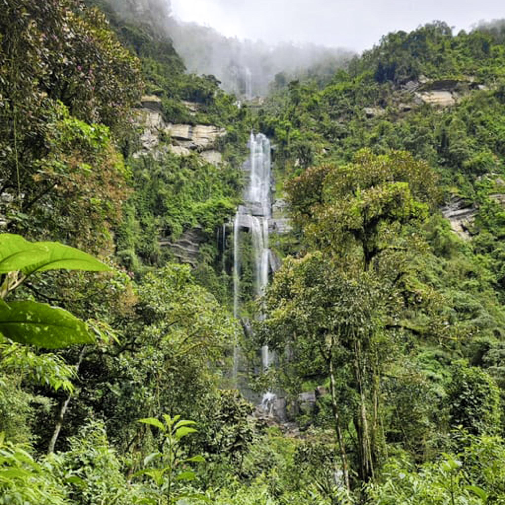
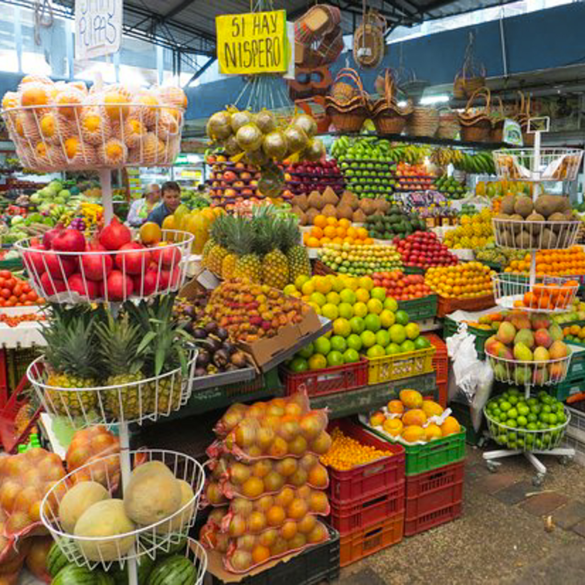
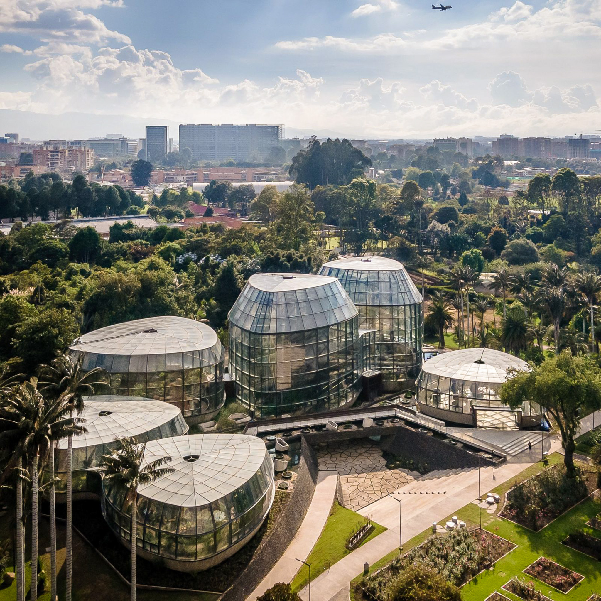

Travel to Bogota
Discover the rich history and vibrant culture of Bogotá.
Colombia’s bustling capital nestled in the Andes.
Top plans in Bogota

Waterfalls & Guadalupe Hill Hike
Enjoy breathtaking views on a guided hike through lush forests and the refreshing mist of the 590-meter tall cascade.

Foodie Tour
From exotic fruits at Paloquemao Market to gourmet dining in La Candelaria,
this culinary adventure offers a delicious journey through Bogotá’s diverse food scene.

Botanical Garden and Museums Tour
Explore cultural heritage with a guided museum tour and immerse in nature at the Botanical Garden.
Your Guide
"I’ve called Bogotá home for over 20 years, and I’m excited to share its vibrant culture, stunning landmarks, and hidden gems with you."